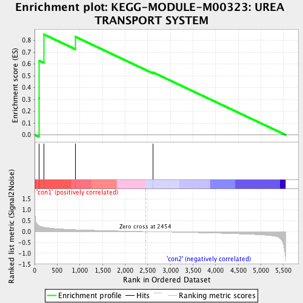
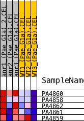
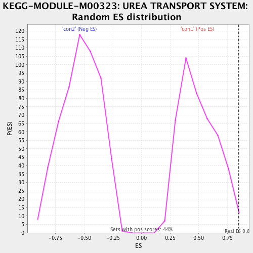

| | | Dataset | Anr_gene.AnrvsWT.cls#con1_versus_con2 |
| Phenotype | AnrvsWT.cls#con1_versus_con2 |
| Upregulated in class | con1 |
| GeneSet | KEGG-MODULE-M00323: UREA TRANSPORT SYSTEM |
| Enrichment Score (ES) | 0.8494284 |
| Normalized Enrichment Score (NES) | 1.7083256 |
| Nominal p-value | 0.016018307 |
| FDR q-value | 0.20707482 |
| FWER p-Value | 0.827 |
Table: GSEA Results Summary

Fig 1: Enrichment plot: KEGG-MODULE-M00323: UREA TRANSPORT SYSTEM
Profile of the Running ES Score & Positions of GeneSet Members on the Rank Ordered List
| PROBE | DESCRIPTION
(from dataset) | GENE SYMBOL | GENE_TITLE | RANK IN GENE LIST | RANK METRIC SCORE | RUNNING ES | CORE ENRICHMENT | | 1 | PA4860 | na | | | 95 | 0.272 | 0.3109 | Yes |
| 2 | PA4858 | na | | | 102 | 0.263 | 0.6268 | Yes |
| 3 | PA4862 | na | | | 207 | 0.201 | 0.8494 | Yes |
| 4 | PA4861 | na | | | 898 | 0.088 | 0.8304 | No |
| 5 | PA4859 | na | | | 2618 | -0.007 | 0.5285 | No |
Table: GSEA details [plain text format]

Fig 2: KEGG-MODULE-M00323: UREA TRANSPORT SYSTEM
Blue-Pink O' Gram in the Space of the Analyzed GeneSet

Fig 3: KEGG-MODULE-M00323: UREA TRANSPORT SYSTEM: Random ES distribution
Gene set null distribution of ES for KEGG-MODULE-M00323: UREA TRANSPORT SYSTEM